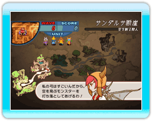
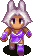
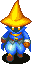
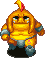
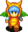
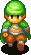
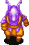
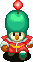
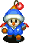

キャラクターは個々に能力（ジョブ）が違うので、状況に合わせて配置しましょう。
キャラクターを配置するにはギルが必要です。
ギルを消費することで、配置したキャラクターのレベルを上げることも可能です。
出撃、レベルアップにかかるギルはジョブによって異なります。
マップが進むにつれ、より効率の良い戦略が大切になっていきます。
登場キャラクター
マップによって、使用できるキャラは限定されます。
 |
フェンサー
行動範囲は狭いが攻撃力が高い。空を飛ぶ敵には攻撃が届かない。
|
 |
黒魔道士
行動範囲は広いが、詠唱時間がかかる。攻撃対象の近くの敵にもダメージを与える。
|
 |
バーサーカー
攻撃力はフェンサーより低いが、大暴れして近くの敵に同時攻撃する。空飛ぶ敵には攻撃が届かない。
|
 |
狩人
単体の敵にしか攻撃できないが、空飛ぶ敵にも攻撃できる。
|
 |
シーフ
敵が倒された時に近くにいるとより多くのギルを奪う。攻撃は行えない。
|
|
時魔道士
行動範囲が広い。ダメージはあまり与えないが、敵のスピードを遅くする魔法を使う。
|
 |
竜騎士
攻撃までに時間がかかるが、単体の敵に対して大ダメージを与える。空飛ぶ敵にも攻撃できる。
|
 |
魔砲士
砲にこめた魔力を使い、単体の敵に大ダメージを与える。次の攻撃までに時間がかかる。
|
 |
からくり士
からくりを使い「停止」を引き起こす。どんな相手に対しても効果がある。
敵にかかるか、味方にかかるか……。
|